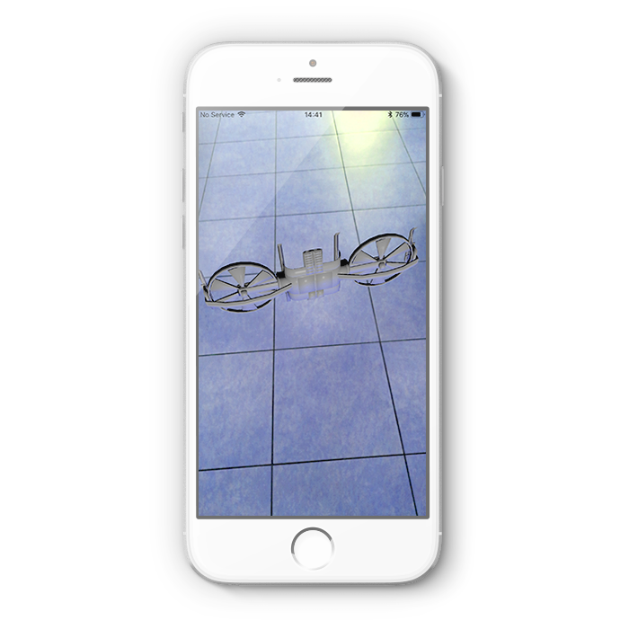

The most common kinds of AR experience by apple devices is to display a view from an back-facing camera. ARKit provides the capability to match the real-world coordinate and integrate the virtual content into it. The AR world can recognizing objects and images in the users's environment.
First step is to add the ARKit scene to the Swift project. All virtual objects in ARkit are rendered according to the relative position of carema. Apple releases the abstract class to configure the camera. The class ARWorldTrackingConfiguration can enable the carmea and set up the scene for AR. The following screenshot shows the how the configuration works before adding the any 3D objects to the scene
A 3D object model can be added by using a subclass of SceneKit where developers can create an object that points to the 3D image file. The 3D image file can act as a child node of SceneKit. The initilization of 3D image object must be done after the AR scene setup configuration. This part has been magically handled by the previous ARWorld setup. The following screenshot shows that a 3D drone has displayed in real-world with default position.
In addition, ARKit performance for rendering objects can be optmized by Unity Engine. The thrid party tool allows developers to create virtual objects with advanced graphics.
ARKit provides the feature to detect known objects in the users' environment and use their coordinates to place AR content. Image detection has been done by its referenced image, position and orientation. This technology has been greatly used by cases in daily life. For example, the technology can be used to identify bus schedules and routes where users can scan local bus signs.
However, image recongition may have encountered obstacles because real-world environments will have uncontrollable variables that impact your image detection experience. Thus, there is an limitation of ARKit's image recognition capabilities. For example, the lack of light might affect the image recognition in an AR experience.
Ikea releases an app that can help buyers to visualize its products at home by placing the digital object into your camera view. Before go to the store and buy furniture from the retailer. Users can place any thing to just see how it all looks. To use the app, simply scan the floor of a room, browse a list of products available in the app, and select the product to wherever you would like to place.
The following image shows that how IKEA app integrates into our life, and what IKEA does to change users' buying expereince.